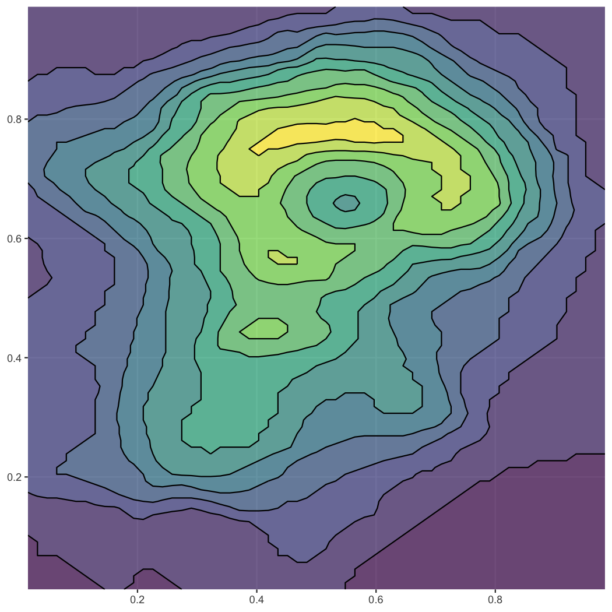

Generate contour lines (isolines) and contour polygons (isobands) from regularly spaced grids containing elevation data. Package originally written by Claus Wilke and donated to r-lib in 2022.
Installation
Install the latest official release from CRAN via:
install.packages("isoband")Install the current development from github via:
# install.packages("pak")
pak::pak("r-lib/isoband")Examples
The two main workhorses of the package are the functions isolines() and isobands(), respectively. They return a list of isolines/isobands for each isolevel specified. Each isoline/isoband consists of vectors of x and y coordinates, as well as a vector of ids specifying which sets of coordinates should be connected. This format can be handed directly to grid.polyline()/grid.path() for drawing. However, we can also convert the output to spatial features and draw with ggplot2 (see below).
library(isoband)
m <- matrix(c(0, 0, 0, 0, 0,
0, 1, 2, 1, 0,
0, 1, 2, 0, 0,
0, 1, 0, 1, 0,
0, 0, 0, 0, 0), 5, 5, byrow = TRUE)
isolines(1:ncol(m), 1:nrow(m), m, 0.5)
#> $`0.5`
#> $`0.5`$x
#> [1] 4.00 3.50 3.00 2.50 2.00 1.50 1.50 1.50 2.00 3.00 4.00 4.50 4.00 3.75 4.00
#> [16] 4.50 4.00
#>
#> $`0.5`$y
#> [1] 4.50 4.00 3.75 4.00 4.50 4.00 3.00 2.00 1.50 1.25 1.50 2.00 2.50 3.00 3.50
#> [16] 4.00 4.50
#>
#> $`0.5`$id
#> [1] 1 1 1 1 1 1 1 1 1 1 1 1 1 1 1 1 1
#>
#>
#> attr(,"class")
#> [1] "isolines" "iso"
isobands(1:ncol(m), 1:nrow(m), m, 0.5, 1.5)
#> $`0.5:1.5`
#> $`0.5:1.5`$x
#> [1] 2.50 2.00 1.50 1.50 1.50 2.00 3.00 4.00 4.50 4.00 3.75 4.00 4.50 4.00 3.50
#> [16] 3.00 3.00 3.25 3.50 3.00 2.50 2.50
#>
#> $`0.5:1.5`$y
#> [1] 4.00 4.50 4.00 3.00 2.00 1.50 1.25 1.50 2.00 2.50 3.00 3.50 4.00 4.50 4.00
#> [16] 3.75 3.25 3.00 2.00 1.75 2.00 3.00
#>
#> $`0.5:1.5`$id
#> [1] 1 1 1 1 1 1 1 1 1 1 1 1 1 1 1 1 2 2 2 2 2 2
#>
#>
#> attr(,"class")
#> [1] "isobands" "iso"The function plot_iso() is a convenience function for debugging and testing.
plot_iso(m, 0.5, 1.5)
The isolining and isobanding algorithms have no problem with larger datasets. Let’s calculate isolines and isobands for the volcano dataset, convert to sf, and plot with ggplot2.
library(ggplot2)
suppressWarnings(library(sf))
#> Linking to GEOS 3.13.0, GDAL 3.8.5, PROJ 9.5.1; sf_use_s2() is TRUE
m <- volcano
b <- isobands((1:ncol(m))/(ncol(m)+1), (nrow(m):1)/(nrow(m)+1), m, 10*(9:19), 10*(10:20))
l <- isolines((1:ncol(m))/(ncol(m)+1), (nrow(m):1)/(nrow(m)+1), m, 10*(10:19))
bands <- iso_to_sfg(b)
data_bands <- st_sf(
level = 1:length(bands),
geometry = st_sfc(bands)
)
lines <- iso_to_sfg(l)
data_lines <- st_sf(
level = 2:(length(lines)+1),
geometry = st_sfc(lines)
)
ggplot() +
geom_sf(data = data_bands, aes(fill = level), color = NA, alpha = 0.7) +
geom_sf(data = data_lines, color = "black") +
scale_fill_viridis_c(guide = "none") +
coord_sf(expand = FALSE)